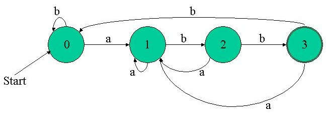
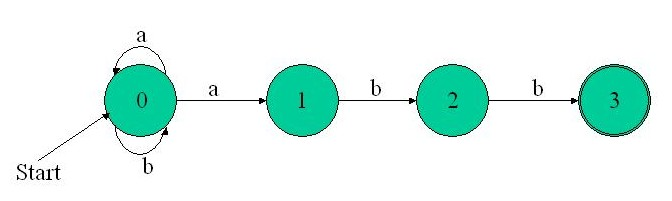

|
Algorithmic Forays Part 3
In this article I'm going to introduce DFAs and NFAs, and explain the differences between them. After showing an example, I will also present the various methods for regex recognition employing DFAs and NFAs. DFA + NFA = FSMTalking about FSMs in the past two articles, I was hiding the full picture from you, for the sake of simplicity. Now I intend to fix that. FSM, as you already know, stands for Finite State Machine. A more scientific name for it is FA - Finite Automaton (plural automata). The theory of Finite Automatons can be classified into several categories, but the one we need for the sake of regex recognition is the notion of determinism. Something is deterministic when it involves no chance - everything is known and can be prescribed and simulated beforehand. On the other hand, nondeterminism is about chance and probabilities. It is commonly defined as "A property of a computation which may have more than one result". Thus, the world of FSMs can be divided to two: a deterministic FSM is called DFA (Deterministic Finite Automaton) and a nondeterministic FSM is called NFA (Nondeterministic Finite Automaton). NFAA nondeterministic finite automaton is a mathematical model that consists of:
Most of this should be familiar to you from our FSM discussion in the past articles. I will now elaborate on a few fine points (trying to simplify and avoid mathematical implications). A NFA accepts an input string X if and only if there is some path in the transition graph from the start state to some accepting (final) state, such that the edge labels along this path spell out X. The definition of a NFA doesn't pose a restriction on the amount of states resulting in some input in some state. So, given we're in some state N it is completely legal (in a NFA) to transition to several different states given the input a. Furthermore, epsilon (eps) transitions are allowed in a NFA. That is, there may be a transition from state to state given "no input". I know this must sound very confusing if it's the first time you learn about NFAs, but an example I'll show a little later should make things more understandable. DFABy definition, a deterministic finite automaton is a special case of a NFA, in which
You can immediately see that a DFA is a more "normal" FSM. In fact the FSMs we were discussing in the previous articles are DFAs. Recognizing regexes with DFAs and with NFAsTo make this more tolerable, consider an example comparing the DFA and the NFA for the regex (a|b)*abb we saw in the previous article. Here is the DFA (exactly the one you saw last time):  And this is the NFA:  Can you see a NFA unique feature in this diagram? Look at state 0. When the input is a, where can we move? To state 0 and state 1 - a multiple transition, something that is illegal in a DFA. Take a minute to convince yourself that this NFA indeed accepts (a|b)*abb. For instance, consider the input string abababb. Recall how NFA's acceptance of a string is defined. So, is there a path in the NFA graph above that "spells out" abababb? There indeed is. The path will stay in state 0 for the first 4 characters, and then will move to states 1->2->3. Consider the input string baabab. Is there a path that spells out this string? No, there isn't, as in order to reach the final state, we must go through abb in the end, which the input string lacks. Both NFAs and DFAs are important in computer science theory and especially in regular expressions. Here are a few points of difference between these constructs:
There are several techniques involving DFAs and NFAs to build recognizers from regexes:
In the next article, I will pick one technique and explain it in depth. After getting to know all the algorithms involved, we will be finally ready for the real implementation of a recognizer. © Copyright by Eli Bendersky, 2003. All rights reserved. Discuss this article in the forums
See Also: © 1999-2011 Gamedev.net. All rights reserved. Terms of Use Privacy Policy
|